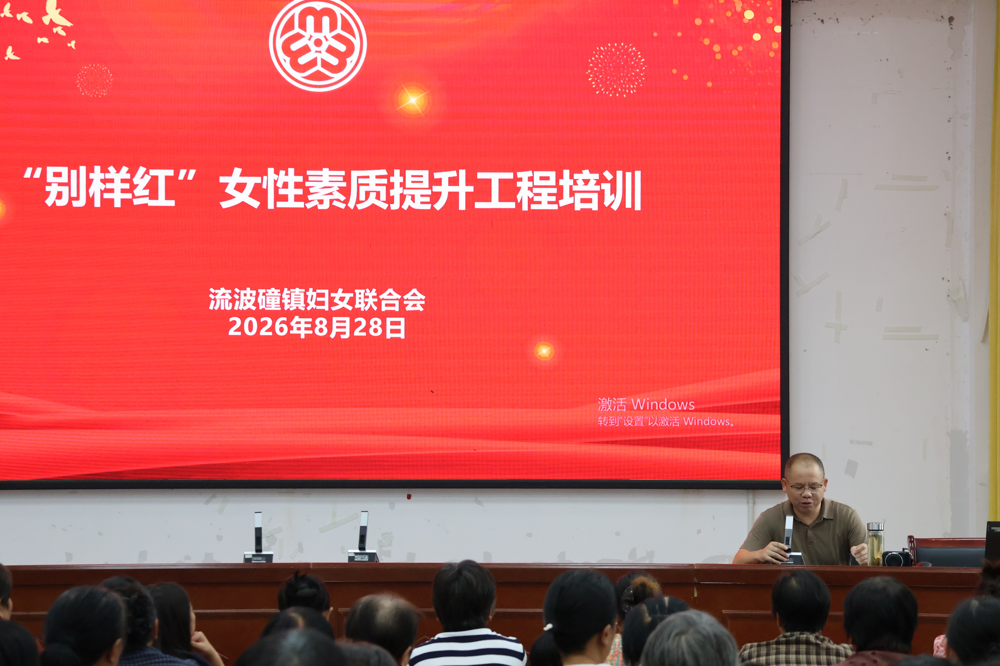
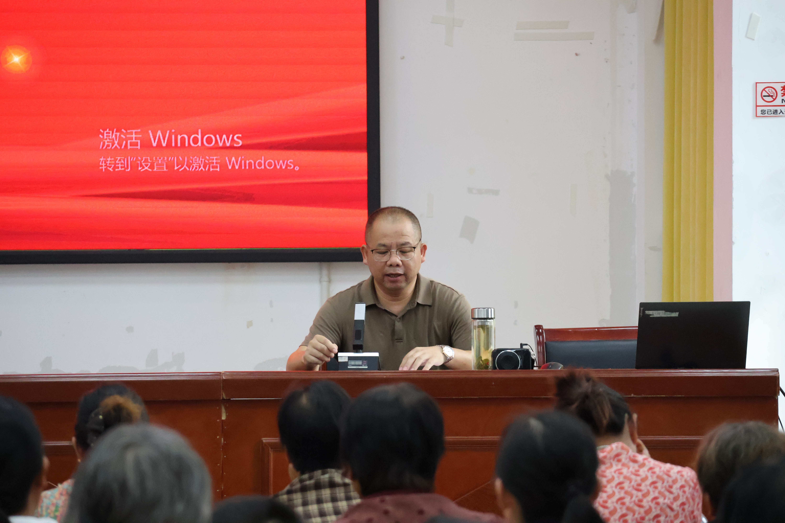
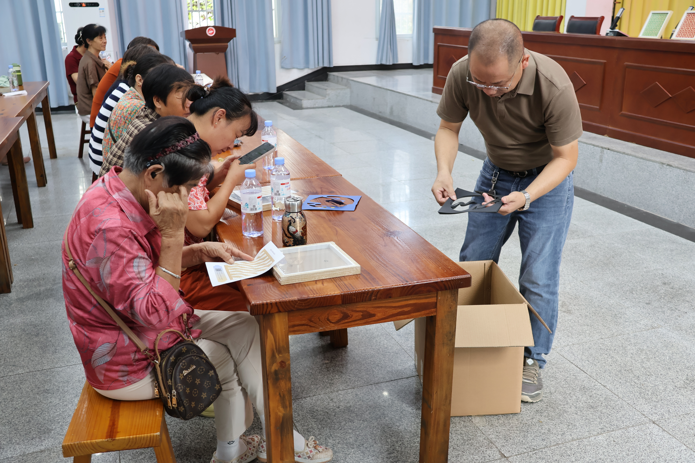
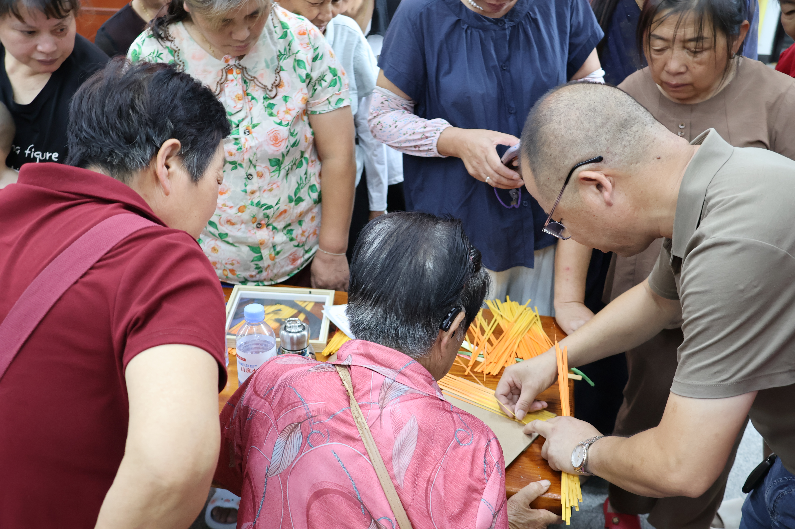

金流竹艺参与“别样红”女性素质提升工程培训，开展竹编技艺体验教学
2026年8月28日，流波䃥镇妇女联合会开展“别样红”女性素质提升工程培训。安徽金流竹艺有限公司参与本次活动，将传统竹编技艺带入培训课堂，通过现场讲解、工艺展示与动手实践，让参训学员近距离了解竹编文化，体验竹编制作的基本方法与乐趣。
活动现场，公司负责人围绕竹编材料、基本编织方法及竹编作品制作进行讲解和示范，并结合实际材料指导学员开展竹编体验。学员们在现场学习竹篾的排列、挑压和编织方法，在动手实践中感受传统竹编技艺的工艺特点与文化魅力。
此次活动既是传统竹编技艺融入基层文化活动的一次实践，也进一步拓展了竹编在技能培训、非遗体验和群众文化活动中的应用场景。金流竹艺将继续结合传统竹编工艺与现代文创、研学体验等形式，推动竹编技艺走进更多群众活动与文化实践场景。
- 以现场讲解与实操体验相结合的方式开展竹编技能教学。
- 让传统竹编从“观看展示”进一步走向“亲手参与”。
- 探索竹编在妇女技能培训、社区文化活动与非遗体验中的更多应用。